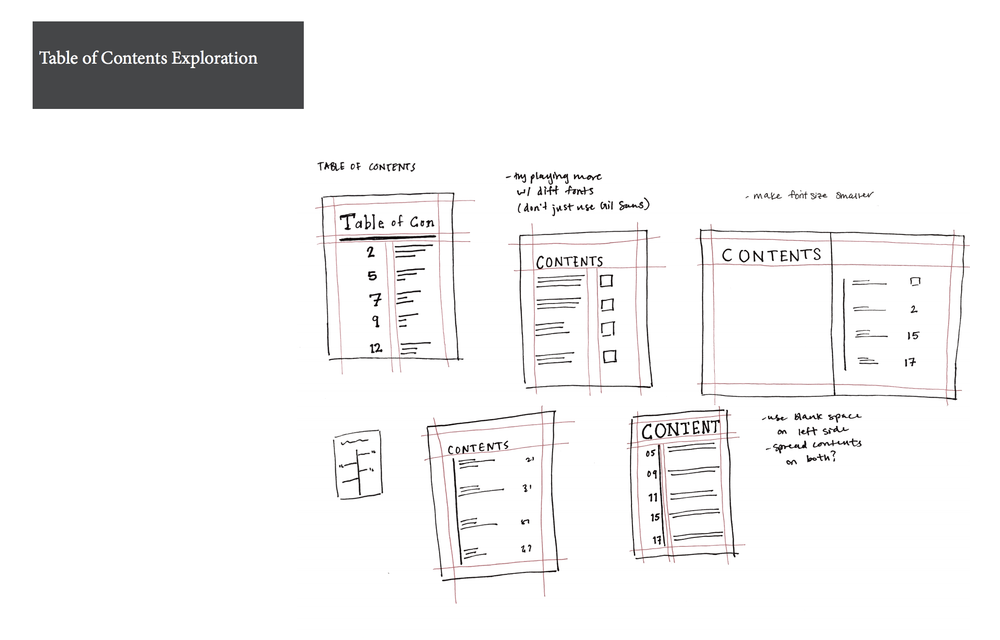

DOW CHEMICAL COMPANY: FORMAL REPORT
Communication | Type & Grid | Individual

CHALLENGE
How can we adapt content to address the needs of multiple audiences?
PROMPT
Design a formal report to relay information to both the engineering and marketing department of the Dow Chemical Company.
DELIVERABLES
Professionally printed and bound report, process work
SKILLS
Grid, color pallette, typographic hierarchy, effective communication through type and images, visual information design
PROCESS
Thoughts
Formal reports are often created to pitch an idea for a product, service, or system. Because readers initially scan pages rather than doing a deep read, it is important that headings and images capture and quickly communicate the gist of a project or investigation.
For this assignment I was given raw text pertaining to the subject of industrial ecology. Choosing from the list of clientsand audiences, I created a harmonious design for a 16-page report that speaks to the needs of my client and audiences.
As a designer, I quickly learned that the companies I designed for (their clients) are made up of internal audiences who do not necessarily share the same point of view. It is the job of a designer to address multiple audiences simultaneously.
Layout Exploration
I experimented with different layout styles, gridding, and white space, looking for a design that would best suit both engineer and marketing audiences. Deciding between a two-column and three-column grid, I went with three columns because it allowed for more white space between columns and was more flexible

Table of Contents
Cover and Inner Page Iterations

Color Pallette Decisions
- Industrial Ecology is not a very approachable/interesting topic that people are “drawn” to
- Wanted a light-weight color scheme that would contrast with the density of information being given in the report
- In order to convey aspects of ecology, nature, appreciation for environment I went with a blue, green color scheme because it was approachable, calming and light
- Later on matched the outer and inner cover photos with these colors to create a sense of completeness
Font Considerations
- Want something modern, for marketers and engineers
- Decided on a sans serif font with some serif accents through
- Switched from Gil Sans regular to Gil Sans Light Regular seemed too heavy and contrasted with the light feeling of the overall formal report
Size and Spacing
- Changed leading from 18pt in first iteration and eventually switched to 14 pt because the former was too airy.
- Changed justified columns to ragged to make it seem more natural
- Changed body type size from 14 to 12 because the large size of the 14pt font made the report seem child- like or directed towards a fairly young audience instead of seeming sophisticated and tailored for engi- neers and marketers
Final Page Layouts